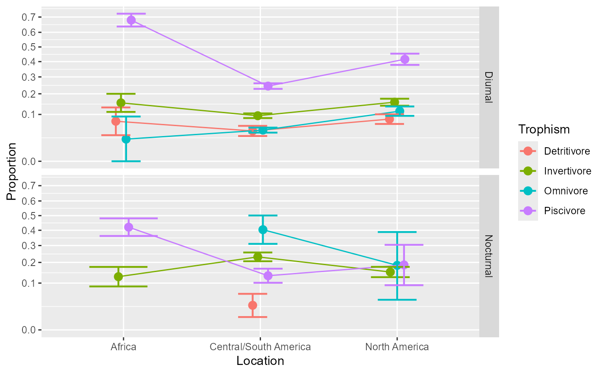
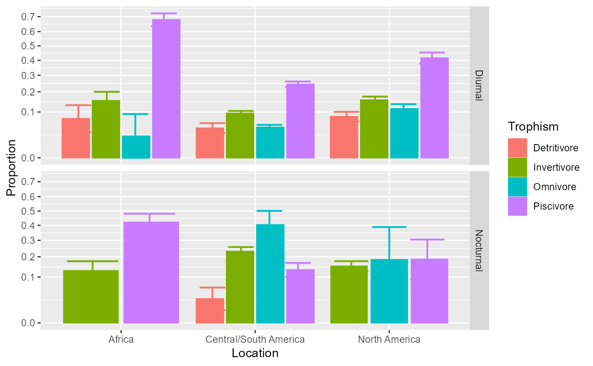
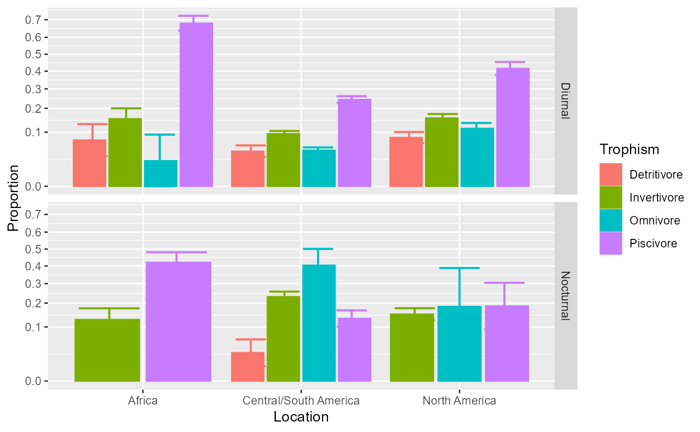

The function 'anopaPlot()' performs a plot of proportions for designs with up to 4 factors according to the 'ANOPA' framework. See lc23;textualANOPA for more. The plot is realized using the 'superb' library; see cgh21;textualANOPA. It uses the arc-sine transformation 'A()'.
Usage
anopaPlot(w, formula = NULL, confidenceLevel = .95, allowImputing = FALSE,
showPlotOnly = TRUE, plotLayout = "line",
errorbarParams = list( width =0.85, linewidth=0.75 ), ...)Arguments
- w
An ANOPA object obtained with
anopa();- formula
(optional) Use formula to plot just specific terms of the omnibus test. For example, if your analysis stored in
whas factors A, B and C, thenanopaPlot(w, ~ A * B)will only plot the factors A and B.- confidenceLevel
Provide the confidence level for the confidence intervals (default is 0.95, i.e., 95%).
- allowImputing
(default FALSE) if there are cells with no observations, can they be imputed? If imputed, the option "ANOPA.zeros" will be used to determine how many additional observations to add, and with how many successes. If for example, the option is (by default)
c(0.05, 1), then 20 cases will be added, only one being a success (respecting the .05 target). Keep in mind that imputations has never been studies with regards to proportions so be mindful that the default optin has never been tested nor validated.- showPlotOnly
(optional, default True) shows only the plot or else shows the numbers needed to make the plot yourself.
- plotLayout
(optional; default "line") How to plot the proportions; see superb for other layouts (e.g., "line").
- errorbarParams
(optional; default list( width =0.5, linewidth=0.75 ) ) is a list of attributes used to plot the error bars. See superb for more.
- ...
Other directives sent to superb(), typically 'plotLayout', 'errorbarParams', etc.
Details
The plot shows the proportions on the vertical axis as a function of the factors (the first on the horizontal axis, the second if any in a legend; and if a third or even a fourth factors are present, as distinct rows and columns). It also shows 95% confidence intervals of the proportions, adjusted for between-cells comparisons. The confidence intervals are based on a z distribution, which is adequate for large samples c90,ll90ANOPA. This "stand-alone" confidence interval is then adjusted for between-cell comparisons using the superb framework cgh21ANOPA.
See the vignette DataFormatsForProportions
for more on data formats and how to write their formula.
See the vignette ConfidenceIntervals for
details on the adjustment and its purpose.
Examples
#
# The Arrington Et Al., 2002, data on fishes' stomach
ArringtonEtAl2002
#> Location Trophism Diel s n
#> 1 Africa Detritivore Diurnal 16 217
#> 2 Africa Invertivore Diurnal 76 498
#> 3 Africa Invertivore Nocturnal 55 430
#> 4 Africa Omnivore Diurnal 2 87
#> 5 Africa Piscivore Diurnal 673 989
#> 6 Africa Piscivore Nocturnal 221 525
#> 7 Central/South America Detritivore Diurnal 68 1589
#> 8 Central/South America Detritivore Nocturnal 9 318
#> 9 Central/South America Invertivore Diurnal 706 7452
#> 10 Central/South America Invertivore Nocturnal 486 2101
#> 11 Central/South America Omnivore Diurnal 293 6496
#> 12 Central/South America Omnivore Nocturnal 82 203
#> 13 Central/South America Piscivore Diurnal 1275 5226
#> 14 Central/South America Piscivore Nocturnal 109 824
#> 15 North America Detritivore Diurnal 142 1741
#> 16 North America Invertivore Diurnal 525 3368
#> 17 North America Invertivore Nocturnal 231 1539
#> 18 North America Omnivore Diurnal 210 1843
#> 19 North America Omnivore Nocturnal 7 38
#> 20 North America Piscivore Diurnal 536 1289
#> 21 North America Piscivore Nocturnal 19 102
# This examine the omnibus analysis, that is, a 3 x 2 x 4 ANOPA:
w <- anopa( {s;n} ~ Location * Trophism * Diel, ArringtonEtAl2002)
#> ANOPA::fyi(1): Combination of cells missing. Adding:
#> Location Trophism Diel s n
#> Africa Detritivore Nocturnal 0 0
#> Africa Omnivore Nocturnal 0 0
#> North America Detritivore Nocturnal 0 0
#> Warning: ANOPA::warning(1): Some cells have zero over zero data. Imputing...
# Once processed into w, we can ask for a standard plot
anopaPlot(w)

# As you may notice, there are points missing because the data have
# three missing cells. The litterature is not clear what should be
# done with missing cells. In this package, we propose to impute
# the missing cells based on the option `getOption("ANOPA.zeros")`.
# Consider this option with care.
anopaPlot(w, allowImputing = TRUE)
#> Warning: ANOPA::warning(201): Cell Africa Detritivore Nocturnal missing in data. Imputing...
#> Warning: ANOPA::warning(201): Cell Africa Omnivore Nocturnal missing in data. Imputing...
#> Warning: ANOPA::warning(201): Cell North America Detritivore Nocturnal missing in data. Imputing...
 # We can place the factor `Diel` on the x-axis (first):
anopaPlot(w, ~ Diel * Trophism * Location )
# We can place the factor `Diel` on the x-axis (first):
anopaPlot(w, ~ Diel * Trophism * Location )
 # Change the style for a plot with bars instead of lines
anopaPlot(w, plotLayout = "bar")

# Changing the error bar style
anopaPlot(w, plotLayout = "bar", errorbarParams = list( width =0.1, linewidth=0.1 ) )
# Change the style for a plot with bars instead of lines
anopaPlot(w, plotLayout = "bar")

# Changing the error bar style
anopaPlot(w, plotLayout = "bar", errorbarParams = list( width =0.1, linewidth=0.1 ) )
 # Illustrating the main effect of Location (not interacting with other factors)
# and the interaction Diel * Trophism separately
anopaPlot(w, ~ Location )
# Illustrating the main effect of Location (not interacting with other factors)
# and the interaction Diel * Trophism separately
anopaPlot(w, ~ Location )
 anopaPlot(w, ~ Diel * Trophism )
anopaPlot(w, ~ Diel * Trophism )
 # All these plots are ggplot2 so they can be followed with additional directives, e.g.
library(ggplot2)
anopaPlot(w, ~ Location) + ylim(0.0, 1.0) + theme_classic()
#> Scale for y is already present.
#> Adding another scale for y, which will replace the existing scale.
# All these plots are ggplot2 so they can be followed with additional directives, e.g.
library(ggplot2)
anopaPlot(w, ~ Location) + ylim(0.0, 1.0) + theme_classic()
#> Scale for y is already present.
#> Adding another scale for y, which will replace the existing scale.
 anopaPlot(w, ~ Diel * Trophism) + ylim(0.0, 1.0) + theme_classic()
#> Scale for y is already present.
#> Adding another scale for y, which will replace the existing scale.
anopaPlot(w, ~ Diel * Trophism) + ylim(0.0, 1.0) + theme_classic()
#> Scale for y is already present.
#> Adding another scale for y, which will replace the existing scale.
 # etc. Any ggplot2 directive can be added to customize the plot to your liking.
# See the vignette `ArringtonExample`.
# etc. Any ggplot2 directive can be added to customize the plot to your liking.
# See the vignette `ArringtonExample`.